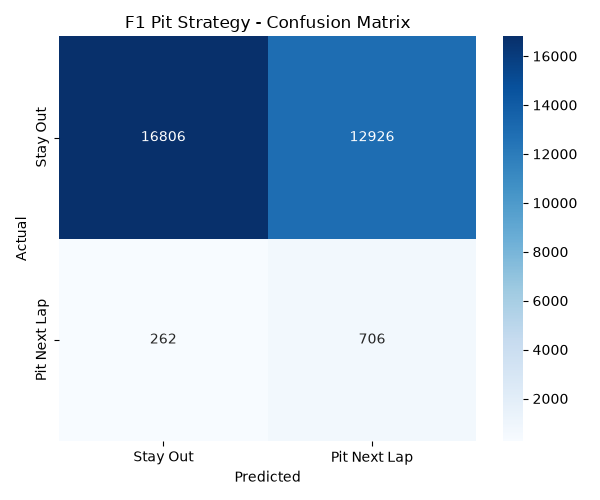
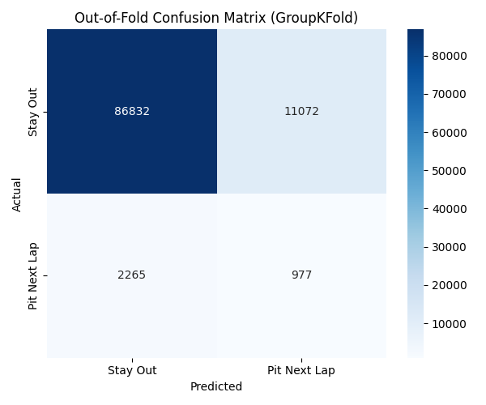
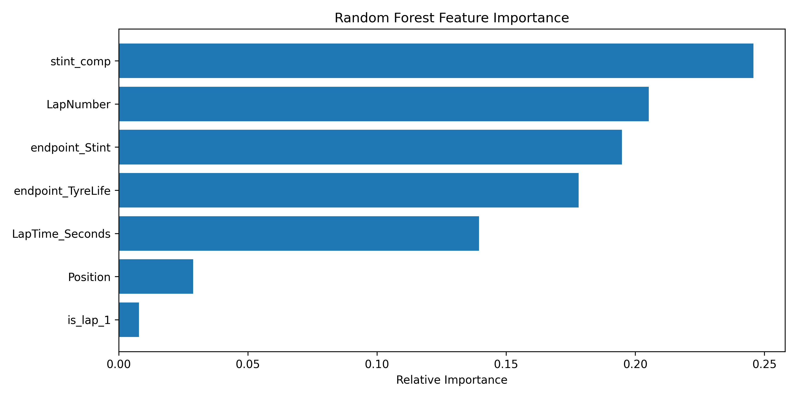
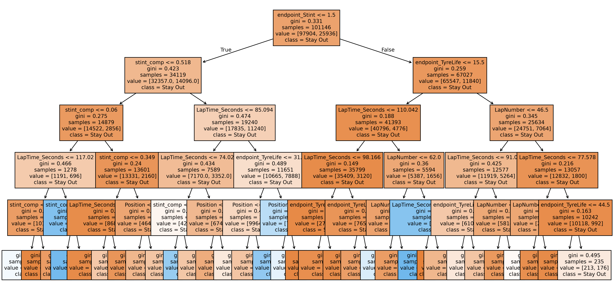

The F1 Pit Stop Optimizer uses machine learning to predict whether a Formula 1 driver should make a pit stop on the next lap. The model is trained on Jolpica F1 race data and considers factors such as lap data, tyre life, race position, and stint information.
Formula 1 is a sport where small decisions can completely change the outcome of a race. One of the most important decisions is knowing the exact right time to make a pit stop. Pitting too early can cause a loss of track position, while pitting too late can lead to tire degradation and slower performance.
Can a machine learning model accurately predict when an F1 driver should pit based on lap time, tire life, position, and stint length?
The project started as a simple Decision Tree, which is one tree of yes or no questions. Since one tree tends to memorize the training data instead of learning general patterns, the team upgraded to a Random Forest, which combines the decisions of many trees for a stronger answer. Along the way, the team also built new features like stint_comp, a number that compares a driver's current stint length to the typical stint length for that specific track, and reworked how class imbalance was handled so the rare "pit" laps were not ignored.
The model uses race conditions and driver data to estimate whether a pit stop is likely to be appropriate on the next lap.
The team used a Random Forest Classifier, which sorts each lap into one of two groups instead of predicting a number. It uses supervised learning, which means the computer studies thousands of past laps that are already labeled with the correct answer (pit or stay out) and learns the pattern from those examples.
Inputs: lap number, tire life, race position, stint number, lap time, and stint_comp.
Output: a binary value of 0 or 1, 0 meaning driver should stay out and 1 meaning driver should pit the next lap.
A single decision tree asks a series of yes or no questions, and each question splits the data into two groups.
One tree can learn the training data too closely and perform worse on new races. A Random Forest builds 100 different
trees, each trained on a slightly different group of the data, and then lets them vote. Averaging many desicions makes the final prediction more reliable.
Strengths: each tree's decisions can be visualized, and the forest combines many race factors at once.
Limits: the model can still overfit if it is not carefully controlled, and a missing or unusual
data point does not automatically change how confident the model is.
The model was evaluated using Group KFold cross-validation, which splits the data by race so the model is never tested on a race it already used during training. Because pit stops are rare, PR-AUC (Precision-Recall Area Under the Curve) was used, since it focuses only on how well the model finds the pit-stop laps.
Accuracy (86.5%) looks strong, but the model guessing "Stay Out" for every lap would score 96.8%. So measuring accuracy will not help the model improve.
PR-AUC (0.072) compares the model to random guessing on this specific dataset, where random guessing would score about 0.032.
That means the model is 2.24 times better than chance at spotting pit-stop laps, which is real progress, but still a modest overall score.
Recall (31.6%) means the model correctly catches about 3 out of every 10 real pit stops.
Precision (8.7%) means that when the model predicts "pit," it is only right about 9% of the time, so it currently raises a lot of false alarms.
The model has picked up on a real pattern and clearly beats random guessing, however, it is not accurate enough yet to replace a
human strategist making the call.



